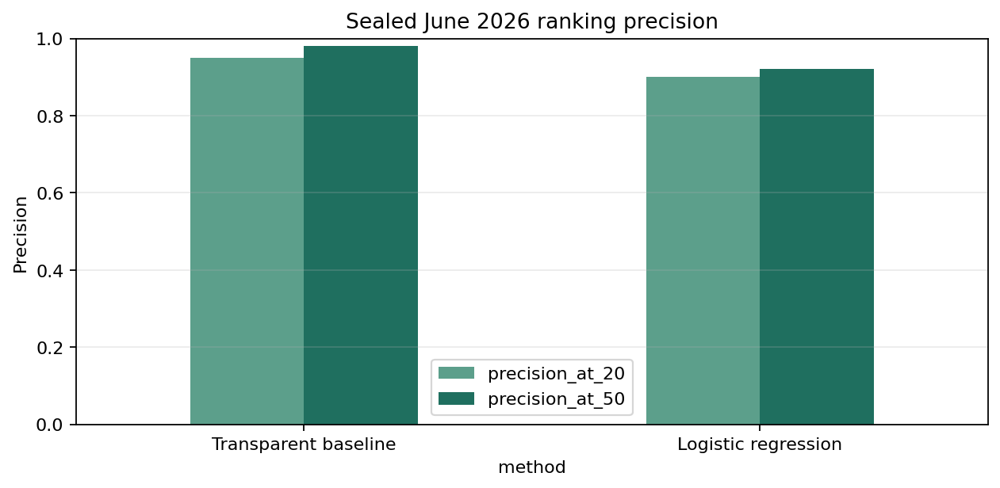

Abstract
This study asks whether historical page-level search signals can prioritize pages for content review. It uses the gated FlyRank warehouse release at the client-page-month grain, with March 2026 as the development validation period and June 2026 reserved as the sealed final outcome period. A transparent demand-and-deterioration rule is compared with regularized logistic regression on identical evaluation rows. On 93,048 sealed observations, logistic regression improved ROC AUC from 0.554 to 0.654 and average precision from 0.703 to 0.766, while the baseline remained better at Precision@20 (0.950 versus 0.900) and Precision@50 (0.980 versus 0.920). The resulting queue supports human content review with reason codes and action labels; it predicts observed next-month visibility decline, not the causal effect of refreshing content.
Introduction and decision problem
An SEO team with limited review capacity must decide which existing pages to inspect first. This study asks whether pre-outcome search signals can rank pages that later experience a material visibility decline more effectively than a transparent rule.
One observation is a pseudonymized client-page snapshot. A false positive wastes editorial time; a false negative leaves an observed decline unreviewed. The output is a ranked decision-support queue, not an automated editing system.
Data source, release, windows, and exclusions
The analysis uses fact_content_daily_performance from flyrank_pseudonymized_warehouse_release_v20260703, accessed through DuckDB and aggregated remotely to client-page-month snapshots. Eligible observations have at least 20 GSC-available days in both months and at least 100 feature-month impressions.
| Role | Feature month | Outcome month | Use |
|---|---|---|---|
| Initial training | January 2026 | February 2026 | Model fitting |
| Initial training | February 2026 | March 2026 | Model fitting |
| Development validation | March 2026 | April 2026 | Method validation |
| Final refit addition | April 2026 | May 2026 | Refit after method lock |
| Sealed final test | May 2026 | June 2026 | One final evaluation |
June was not used for feature, threshold, or model selection. IDs were used only for joins and overlap audits. Client names, domains, URLs, titles, raw queries, product decisions, credentials, row-level exports, and future-window measures are excluded from this public paper.
Warehouse grain audit
March contained 9,841,378 valid page-days with no repeated keys. June contained 11,694,072 physical rows, including 6,390 exact repeated GSC observations; de-duplication left 11,687,682 canonical page-days. Neither partition contained invalid keys or conflicting same-key GSC observations.
Methodology
Observed target—not refresh impact
A positive target means next-month impressions were no more than 80% of feature-month impressions: an observed decline of at least 20%. It does not indicate whether a page was refreshed or estimate the causal effect of refreshing it.
Features, baseline, and model
The eight pre-outcome features are log impressions, CTR, impression-weighted average position, active days, click days, position-observed days, impression momentum, and click momentum. CTR is total clicks divided by total impressions; average position is total position sum divided by total impressions.
The transparent baseline combines demand, recent deterioration, positions 4–20, and low CTR. The ML pipeline uses median imputation, standardization, and class-balanced regularized logistic regression with seed 42.
Validation and leakage controls
Development used March features and April outcomes. After method lock, the model was refit using outcomes through May and evaluated once on May features and the sealed June outcome. Both methods used identical rows. Assertions enforced temporal order, excluded future and target-derived fields, and stopped on conflicting page-day observations.
The final split included 47 training clients, 44 test clients, and 41 overlapping clients. This tests later periods for largely recurring clients; it is not evidence of generalization to unseen clients.
Results: better overall ranking, weaker top-K precision
The sealed set contained 93,048 observations and 59,620 positives—a 64.1% base rate.
Development validation
March-to-April development included 88,941 observations, 45,624 positives, and a 51.3% base rate.
| Method | P@20 | P@50 | Average precision | ROC AUC |
|---|---|---|---|---|
| Transparent baseline | 0.900 | 0.940 | 0.578 | 0.548 |
| Logistic regression | 0.700 | 0.640 | 0.591 | 0.615 |
Sealed final test
| Method | Base rate | P@20 | P@50 | Average precision | ROC AUC |
|---|---|---|---|---|---|
| Transparent baseline | 0.641 | 0.950 | 0.980 | 0.703 | 0.554 |
| Logistic regression | 0.641 | 0.900 | 0.920 | 0.766 | 0.654 |

Decision: use the transparent baseline when only 20–50 pages can be reviewed. The model contains useful broader ranking signal, but its higher ROC AUC and average precision do not justify replacing the baseline at the tested shortlist sizes.
Aggregate metric receipt: verified warehouse run.
Limitations and honest interpretation
The system forecasts measured search visibility. It does not estimate Google's ranking algorithm, diagnose why impressions changed, or prove that refreshing a page causes recovery. Demand, seasonality, indexing, SERP features, query mix, site changes, and coverage can affect the outcome.
The panel is unbalanced, the 20% threshold and eligibility rules are decision conventions, and the final positive rate is high. Precision@20 and Precision@50 describe small shortlists and can vary across periods. Substantial client overlap means the result represents temporal performance for mostly recurring clients, not unseen-client performance.
A causal refresh-effect claim would require documented interventions plus an experimental or credible quasi-experimental design.
Ranked content-action recommendations
The private queue ranks all eligible observations. These public aggregates describe the scored population—not a recommendation to update every page.
Reachable search position
Check coverage and intent fit. Position alone is not a refresh diagnosis.
Low CTR with demand
Review snippet and intent alignment before changing body content.
Recent visibility decay
Check freshness, demand shifts, relevance, and technical causes.
Multivariate decline risk
Inspect the combined evidence before selecting an action.
Reviewers should start at the ranked head of the queue and retain the score, reason code, action label, and limitation. Never automate publishing, deletion, rewriting, or client communication from this output.
Reproducibility
Review the executed capstone notebook, pipeline module, unit tests, aggregate metric receipt, and grain audit. Install requirements.txt, provide authorized access through HF_TOKEN, set RUN_WAREHOUSE=1, and execute the notebook top to bottom. Seed: 42.
The row-level recommendation CSV is private and gitignored. Public JSON and figures contain aggregate results only.